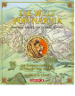

Die Welt von Narnia: Aus dem Archiv des letzten Konigs. Die Chronologie zum Entdecken und Erleben

"Aus dem Kern eines silbernen Apfels entstand der Kleiderschrank. Durch den Kleiderschrank kamen vier Kinder. Diesen Kindern wurde ein besonderer Zauber zuteil. Aus diesem Zauber entstanden sieben unvergessliche Geschichten." Die ganze Welt von Narnia lasst sich mit dieser opulent ausgestatteten Chronologie entdecken. Eindrucksvolle Illustrationen, Texte und Zeitleisten fuhren die Leser mitten hinein in die Magie der weltberuhmten Narnia-Saga.